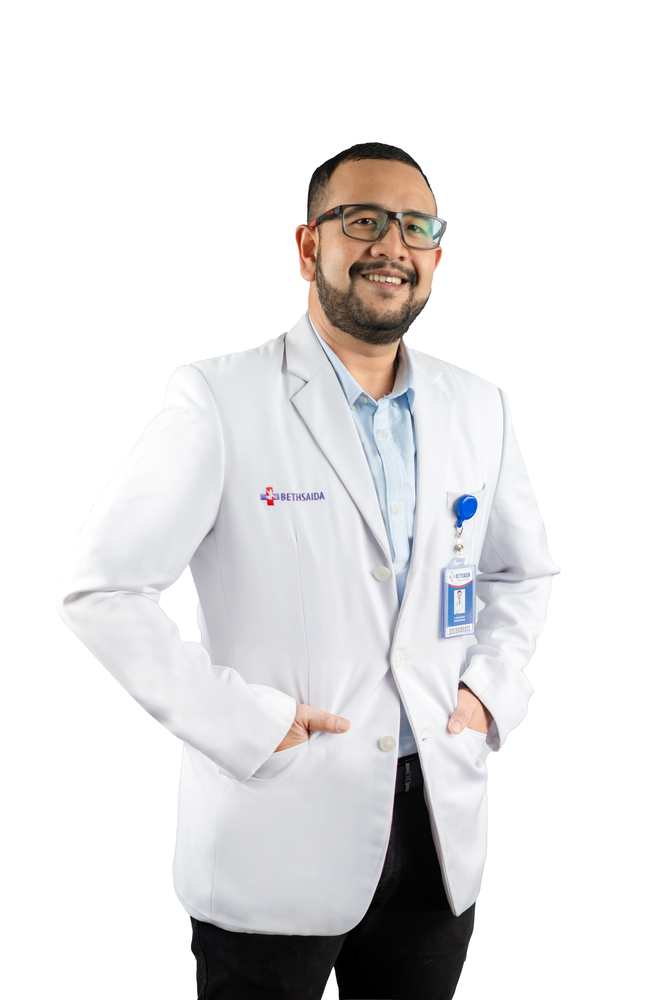
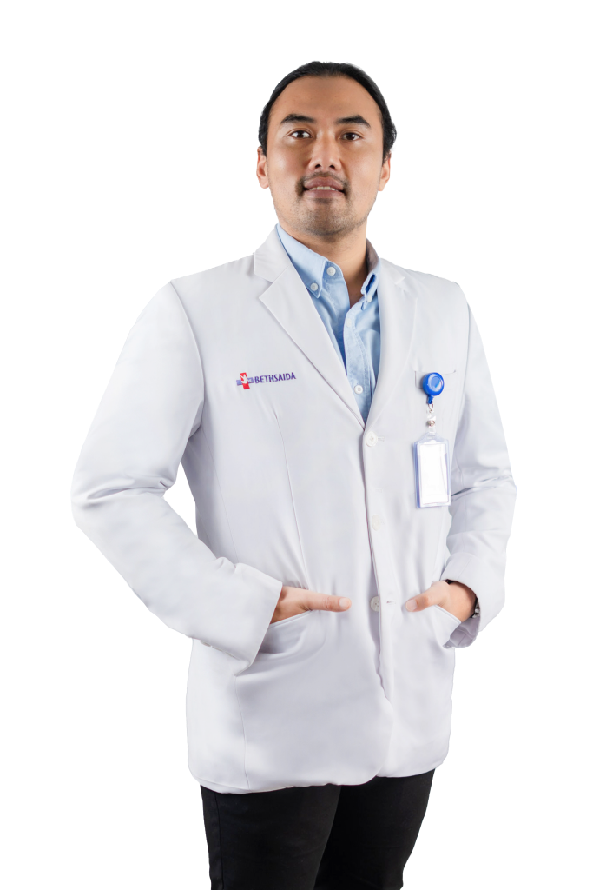
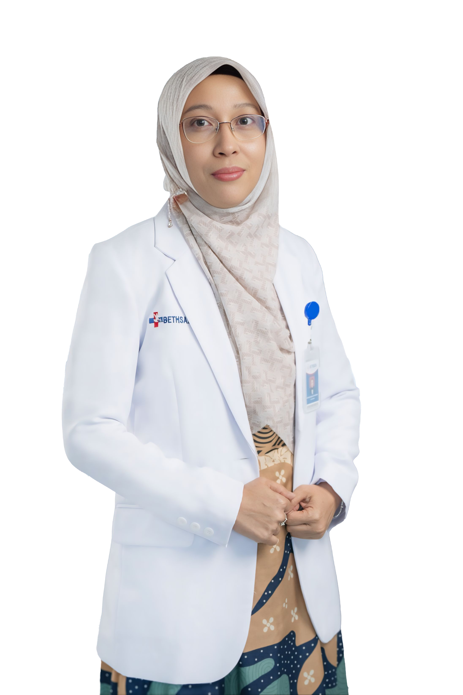
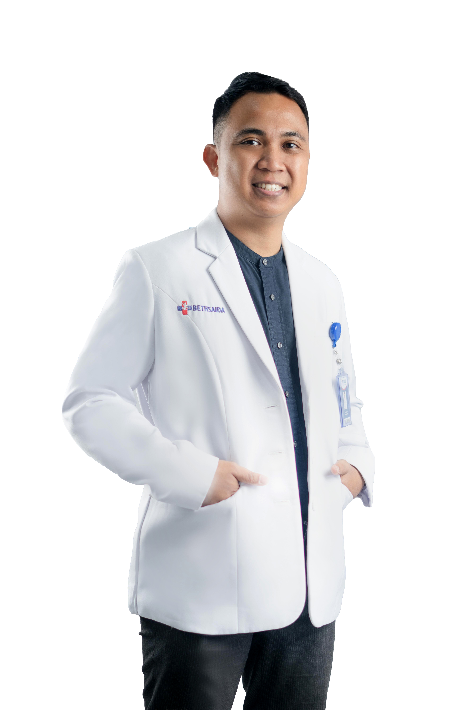

Sabtu
25 Juli 2026Advanced Trauma & Interventional Care
Penanganan Komprehensif Kasus Cedera dan Kegawatdaruratan Medis
Kolaborasi multidisiplin untuk hasil terbaik bagi pasien.
SKP gratis
Waktu
08.00 - 16.00 WIBOffline Venue
Auditorium Bethsaida Hospital Serang Jl. Lingkar Selatan Cilegon, Desa No KM 1, Serang Banten
Clinical focus
Dirancang untuk diskusi kasus yang dekat dengan praktik dokter.
Acara ini mengangkat penanganan cedera dan kegawatdaruratan medis dari perspektif kolaboratif, mulai dari triase, stabilisasi awal, rujukan, hingga intervensi lintas disiplin di fasilitas pelayanan kesehatan.
Penanganan Ortopedi pada Kasus Trauma
Pendekatan ortopedi untuk evaluasi, stabilisasi, dan tata laksana cedera trauma.
Penanganan Bedah Saraf pada Kasus Trauma
Identifikasi risiko neurologis dan alur penanganan bedah saraf pada kasus trauma.
Management Patients with ACS and CCS
Pembahasan tata laksana pasien kardiovaskular akut dan kronis dalam praktik klinis.
Emergency in Pediatric Surgery
Penanganan kegawatdaruratan bedah anak dan koordinasi rujukan yang tepat waktu.
Speaker
Dokter pengisi acara dan topik klinis yang akan dibawakan.
Sesi diisi oleh dokter lintas spesialis yang membahas trauma, bedah saraf, kardiovaskular, dan kegawatdaruratan bedah anak dalam konteks praktik klinis.

dr. Gustman Lumanda Sitanggang, Sp.OT
Penanganan Ortopedi pada Kasus Trauma

dr. Mochamad Sri Arya Heriawan Sp.BS., FICS
Penanganan Bedah Saraf pada Kasus Trauma

dr. Fani Suslina H., Sp.JP(K), FIHA, FAPSIC
Management Patients with ACS and CCS

dr. Dito Desdwianto BS, M.Ked.Klin., Sp.BA
Emergency in Pediatric Surgery
Sasaran peserta
Untuk dokter yang menangani kasus akut dan rujukan kompleks.
Peserta ditujukan untuk dokter yang terlibat dalam penanganan trauma, kegawatdaruratan, rujukan, dan kolaborasi lintas disiplin.
Dokter Umum
Spesialis Penyakit Dalam
Spesialis Jantung
Spesialis Neurologi
Spesialis Anak
Spesialis Bedah Syaraf
Spesialis Bedah Anak
Spesialis Bedah Kardiotoraks dan Vaskular
SKP Gratis
Scan QR untuk mendaftar dan amankan kursi offline.
Peserta wajib memiliki akun Satu Sehat SDMK atau Plataran Sehat untuk proses administrasi SKP.
Offline clinical gathering
Saya Ingin Hadir